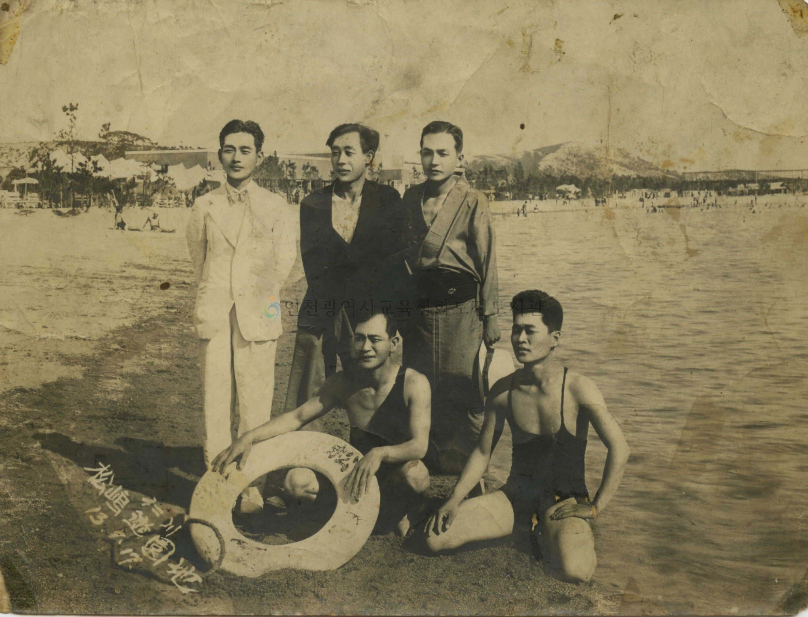

2024
08

송도유원지
1930년대 들어 일본은 우리나라에 대한 노골적인 경제 수탈을 시작하였는데 그 하나로 인천-수원-여주에 이르는 수인선을 부설하는 일이었다. 경기도 내륙의 질 좋은 쌀을 인천으로 수송한 다음 일본으로 실어가기 위해서였다. 1937년 마침내 수인선이 개통되자 쌀 이외에도 많은 승객을 유치하기 위한 수단으로 수인선 인근에 월미도를 버금가는 관광지를 개발할 계획을 세우는데 그것이 송도유원지 조성의 이유였다.또 경제적으로, 군사적으로 점점 강대해진 일본은 중국대륙 침탈의 야욕을 채우기 위해 군사적 요충지로 큰 가치를 가지고 있는 월미도를 다시 국방의 요새로 환원하려는 계획을 갖고 있었기 때문이기도 했다. 월미도의 관광시설을 폐쇄하기 위해 눈을 돌린 곳이 송도유원지였던 것이다.
자세히보기
2019
09
해관문서,인천광역시 문화재자료 제20호
해관은 수출입 화물에 대한 관세사무 등을 맡아보는 행정기관으로 오늘날의 세관과 같다. 우리나라에서의 해관업무는 1883년 6월 16일(음력 5월 12일) 인천해관의 창설을 시초로 하여, 같은 해 10월 31일(음력 10월 1일)에 원산해관, 11월 3일(음력 10월 4일)에 부산해관이 각각 설립됨으로써 시작됐다. 인천해관은 현재의 항동 1가 1번지 현 파라다이스 호텔 동편 공터 부근에 세워졌으며, 창설 당시 인천 해관의 초대 세무사는 영국인 스트리플링(A. B. Stripling)이었다. 본 문서는 인천해관에서 인천감리서로 보낸 13종의 공문서 부분철이다. 2종은 1886년, 10종은 1888년, 1종은 1889년에 작성된 것이다. 각 문서의 발송연월일은 (1) 1886년 7월 초7일 (2) 1886년 7월 초8일 (3) 1888년 3월 7일(음력 정월 25일) (4) 1888년 3월 7일(음력 정월 25일) (5) 1888년 3월 12일 (음력 정월 30일) (6) 1888년 3월 13일 (음력 2월 초1일) (8) 2999년 3월 15일 (음력 2월 초3일) (9) 1888년 3월 15일 (음력 2월 초3일) (10) 1888년 3월 16일 (음력 2월 초4일) (11) 1888년 3월 19일 (음력 2월 초7일) (13) 1889년 5월 27일 등이다. 문서마다 당시 인천해관장 대리 쇠니케(J, F. Schoemicke)의 친필서명과 발송연월일이 적혀 있으며, 제1면의 좌측에는 ‘인천해관 세무사’ 직인이 별도 배접하여 첨부되어 있다. 쇠니케는 스트리플링에 이어 인천해관의 제2대 세무사로 취임한 인물로, 취임기간은 1886년 6월부터 1889년 10월까지였다. 그리고 1889년 11월부터는 총세무사 서리의 직책으로 옮겨 1892년 11월까지 역임한 바 있다. 쇠니케는 인천세무사로 재직하는 동안 고종으로부터 당상관에 해당하는 통정대부(通政大夫)의 품계를 받은 바 있으며, 총세무사 서리 시절에는 호조참판(戶曹參判)의 직함을 부여받기도 하였다. 개항장인 인천, 원산, 부산해관에는 1883년 8월부터 감리서(監理署)가 설치돼 외국과의 통상사무 등을 전담했다. 초기에는 감리서의 책임자인 감리(監理)의 직책을 해당 지역의 부사(府使)가 겸임하여 업무를 수행했는데, 본 문서가 작성될 당시의 ‘인천항통상사무감리(仁川港通商事務監理)’는 인천부사였던 엄세영(1885. 9. 12 ~ 1888. 5. 17), 박제순(1888. 5. 19 ~ 1890. 9. 10) 등이 맡아보고 있었다. 본 문서의 내용은 주로 인천내의 조계문제와 인천항을 출입하는 선박에 대한 관세 및 출입항 문제 등과 관련한 것들이며, 문서 (13)의 경우에는 1887 ~ 1889년간 제물포 조계내의 지가(地價) 중 일부 항목을 정리해 둔 목록으로 첨부문서로 발송됐던 것을 따로 정리하여 철해 둔 것이 아닌가 생각된다.문서의 일부를 한번 살펴보면, 문서 (1)과 (2)는 쇠니케가 인천해관 세무사로 취임한 직후인 1886년 7월에 작성된 것으로 이 중 문서 (2)에는 마포에서 출항한 일본범선 구길환(久吉丸)의 화물목록을 적어서 보낸다는 내용이 적혀있다. 외국선박의 마포진입이 허용된 것은 1884년 3월 12일(음력 2월 15일)부터로, 한국정부는 이 때 인천해관에서 입항수속을 끝내고 소정의 관세를 납부한 범선에 한하여 마포진입을 허용한 바 있다. 188년 5월 8일(음력 4월 14일)부터는 입항조건이 더욱 구체화되어 200톤 이하의 상선에 한해서 마포진입을 허용하되, 입항시에는 우선 인천해관에 수입세 등을 완납하고 선창을 봉쇄한 다음, 그 후에야 비로소 마포 등에 진입하여 해관원의 입회하에 하역 작업을 할 수 있도록 하였다. 그리고 출항시에는 인천해관에서 일단 화물의 유무를 검사하고 수출세 등을 완납한 다음에 선패를 받아 출항토록 하였다. 문서 (2)는 이러한 제도 하에서 인천해관이 검사한 일본 범선의 화물 목록을 인천 감리에게 조회하고 있는 상황을 알려주고 있는 문서이다. 해관문서는 총세무사와 외부간의 왕복 공문서들을 모아 놓은 『해관래함』(海關來函), 『총관공문』(總關公文), 『총관거함』(總關去函), 『총관래신』(總關來申) 등이 있다. 그러나 인천해관에서 발송한 공문서들은 따로 모아진 것이 없고, 다만 위의 자료들이나 외교문서들 속에 첨부되어 남아있을 뿐이며, 그 부본은 아직까지 발견되었다는 보고가 없다. 따라서 이 문서는 인천해관의 업무내용을 알 수 있게 해주는 자료인 동시에, 당시 공문서 부본의 존재를 알려주는 서지적 가치가 있고, 또한 그 희소성에서 문화재적 가치가 인정된다고 볼 수 있겠다.
자세히보기
1
2